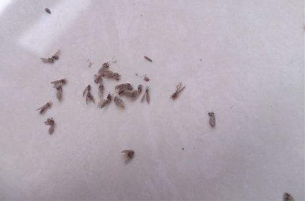

家里有小飞虫怎么办 花盆里发现有小飞虫怎么处理
家里最怕有小虫子，原本以为冬天了又是这么冷的天气就不会有虫子了，可还是有些虫子是不怕冷的，就比如小飞虫，在家里飞来飞去，让人很头痛。
那么，这些小飞虫是哪里来的呢？怎样才能根除家中的小飞虫呢？下面介绍家里有小飞虫的原因及解决方法。

家里发现有小飞虫首先要先查找这些小飞虫是哪里来的，只有做到切断根源才能完成灭了这些小飞虫，不然过段时间就会又有小飞虫到外飞了。
大家可以先从以下几点做起，这样虫子就会慢慢没了，最重要的就是家里要保持干燥、干净。
1、建议定期清理垃圾，要养成良好的生活习惯，果皮、蔬菜要及时的清理，特别是厨房的垃圾，最好做到每餐处理，家里的清洁一定要维持。
2、检查家里的花盆，重点查看花盆底部，如果有积水，及时处理。如家里有养水生植物的，要定期清洗换水，保证花瓶的水干净。
